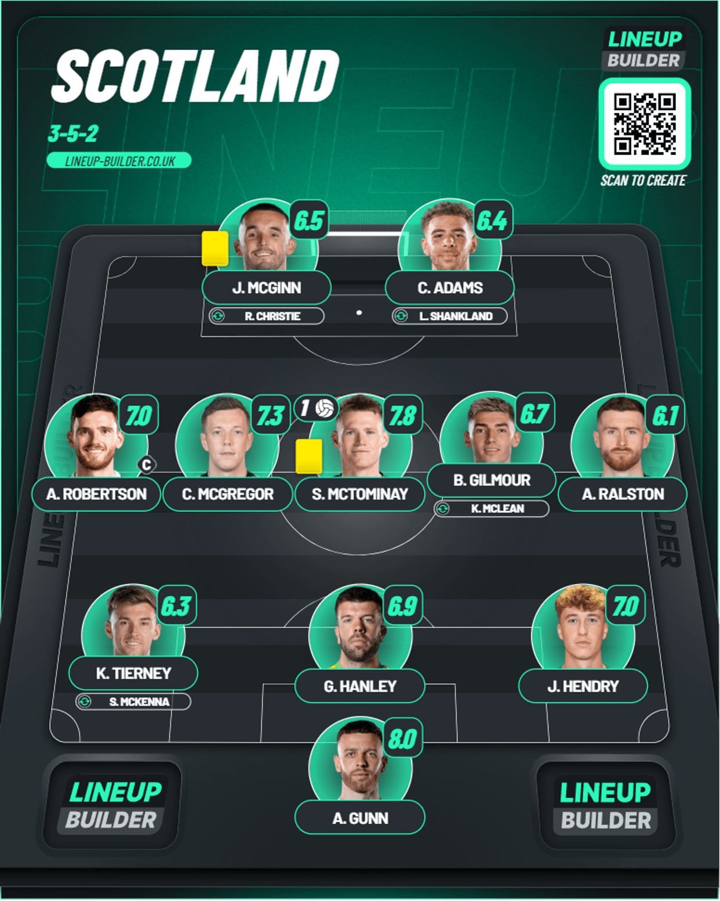
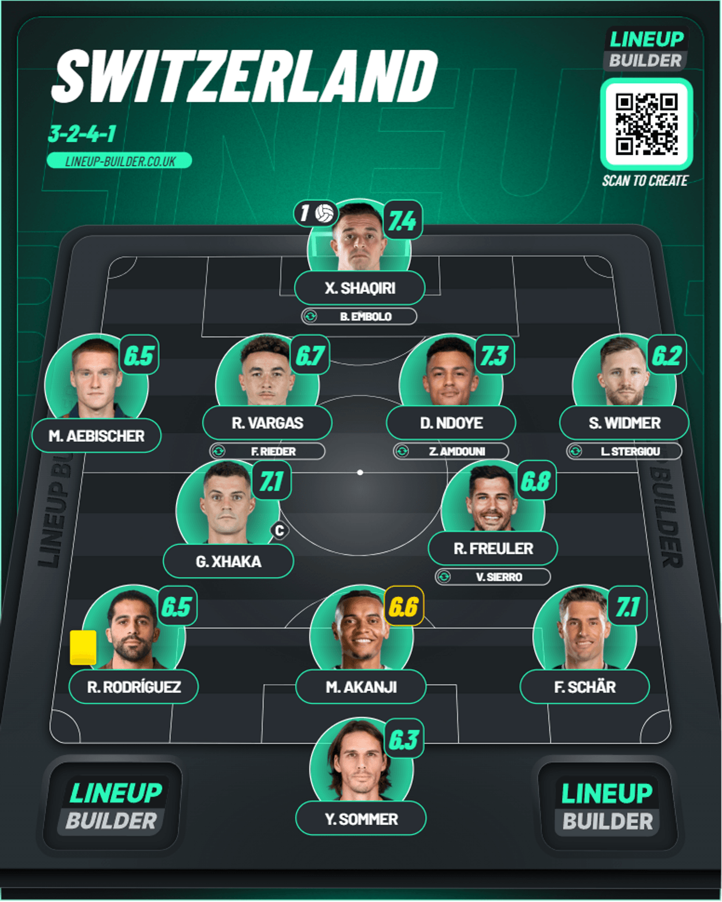
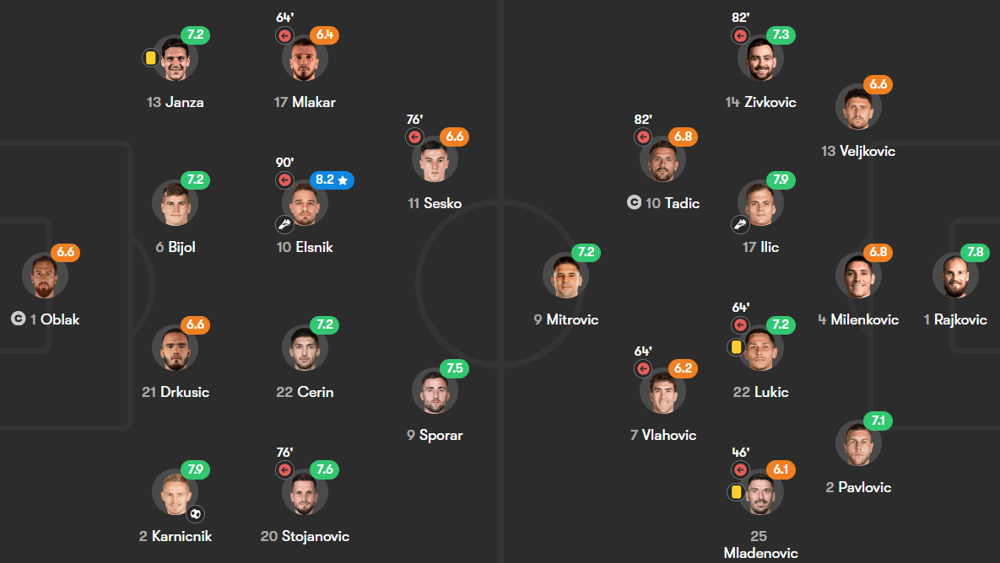
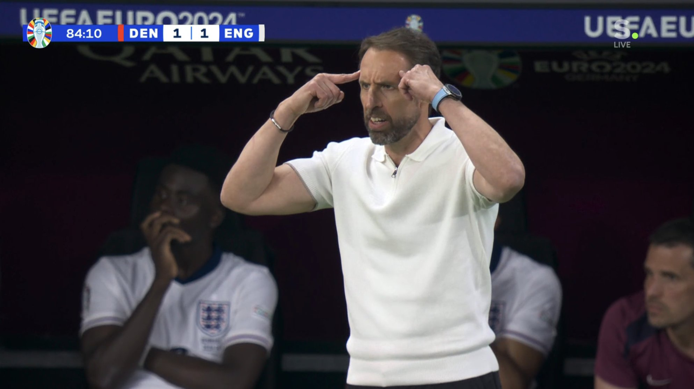
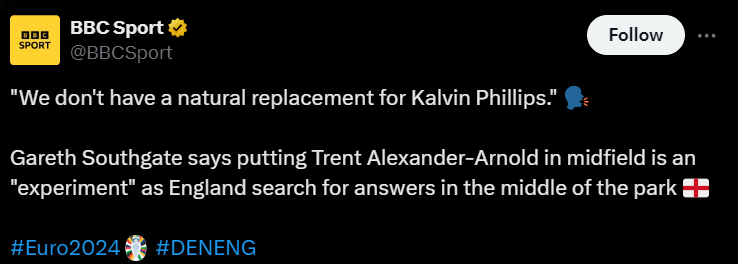
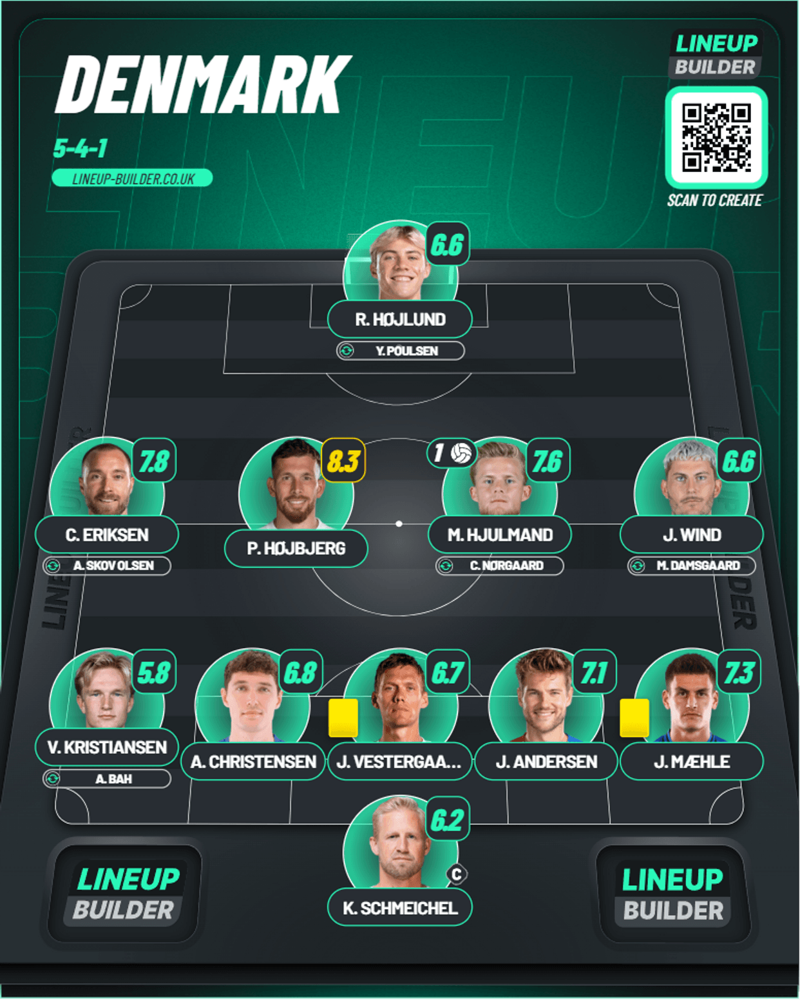
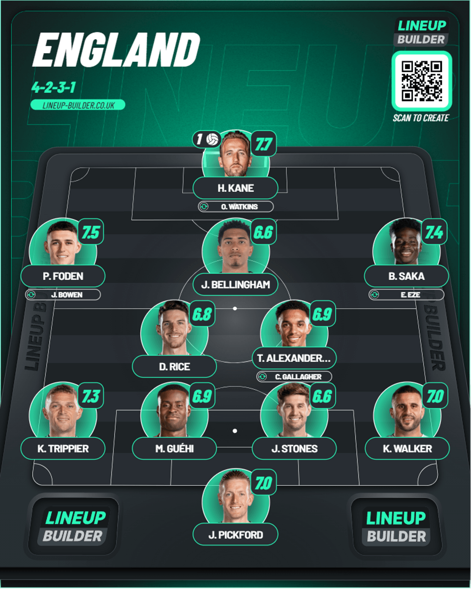

Day 6
Table of Contents
Day 6
Scotland v Switzerland
Super Scott Mct does it again. Shaqiri has introduced himself finally. The tournament of bangers delilvers again. With this result Scotland still keep their hopes of qualifying for the Round of 16 alive which is good after their 5-1 thumping to Germany. I was wondering when McTominay would actually score in this tournament and he finally did but Shaqiri said you ain’t taking 3 points and Switzerland also are strong favorites to finish 2nd no matter what happens to their game against Germany so there’s that. Let’s get into it.
1st Half
We start at minute 13 where Switzerland gave the ball away from the corner and Scotland went on the counter where Gilmour sent the ball to Robertson who drove the ball through the center and found McGregor on the left who pulled it back for McTominay who managed to find the target albeit after a wicked deflection off Schar. There was a weird moment when it was actually credited as a Schar own goal but the shot was on target so it was chalked as a goal to McTominay eventually. The lead didn’t last long enough as Big Xherdan Shaqiri finally announced himself on the Euros stage once again. Scotland messed up playing out from the back and Ralston’s pass only went till Shaqiri was through on goal and he noticed Gunn off his line and he struck it first time into the top left corner. Absolutely unstoppable. With that goal now he’s become the only player who’s scored at the last 3 Euros AND the last 3 World Cups. Switzerland did have a few good chances after that. First was minute 32 when Ndoye who tried to curl one to the corner but Gunn held his ground. Then 2 minutes later the ball was bundled into the net by Switzerland where Vargas plays a header in behind the Scottish defense and Ndoye fired the ball past Gunn but the flag was up quickly for offside.
2nd Half
The second half started with a brilliant chance for the Swiss to go ahead Ndoye managed to dodge Tierney to put himself one-on-one with Gunn but he stood firm to deny him in minute 59. Then Scotland wondered how they did not score when Robertson sent a free kick in from the edge of the penalty area and Hanley won the header and it cannoned off the post in minute 65. Next it was Switzerland’s turn to wonder when a free kick by Rieder which came to the back post for Amdouni but he headed it wide with the goal at his mercy and it ends in 1-1.
Player of the Match - M. Akanji
On ratings, I don’t see why he was picked in all honesty. I’d rather have given it to Gunn probably. Looking at the quote from the UEFA Observer Panel:
“He was dominant in the air, organised Switzerland’s back three well and was composed on the ball, as well as being excellent in the build-up and providing four line-breaking passes.”
Alright then. I can see why his assurance being a good confidence booster for the defense which ensured them being unbeaten. Guess it’s something I never really thought about.
Lineups
- Ratings from Fotmob
Scotland

Switzerland

Slovenia v Serbia
Unlucky Slovenia. Serbia never stop. Oblak goes missing when it mattered 😅. This was so unlucky from Slovenia because they definitely deserved the points, but Serbia kept pushing and pushing and finally with the last kick of the game they managed to get the draw. Let’s get into the reaction
1st Half
We start early in minute 5 when Slovenia were on the attack and the shot was well saved by Rajkovic low at his feet. This was a theme throughout this half. Slovenia had most of the ball and Serbia were happy to let them have it. Serbia did a chance in minute 27 when Vlahovic had a free header but he could only head it straight at Oblak. It was a waste of a great cross. Tadic played a great corner in minute 31, but it agonizingly missed everyone. Slovenia had one chance where they were wondering how it did not go in when in minute 38 where the player managed to play an unexpected one-two with a Serbia defender before his shot hit off the right post and Sesko hit the follow-up high and wide sadly. There was a moment of carnage in the Slovenia box when Zivkovic found Mitrovic but Oblak was on hand to save it brilliantly from close range. There was another chance from Mitrovic who messed up his header towards the end of the half from another cross from Zivkovic.
2nd Half
The 2nd half started as the first half did. Entertaining. Mitrovic and Tadic played a great one-two and the former tried to chip Oblak but he saved it brilliantly. Serbia continued the attack as Gacinovic crosses from the left and Bijnol butchered the clearance and could only slice it for a corner which was ultimately headed away. Next was a cross from Tadic on the right side and the header from Mitrovic took a touch off his marker which led to another corner. Slovenia got a chance from Sesko where they countered after a Serbia attack and he managed to take a shot from the left side but Rajkovic was equal to it tipping it over. The breakthrough finally arrived in minute 69(coughs nice) from Karnicnik who switched it to Elsnik as he kept running and he got the ball back and he finished off the move. It was a classic case of ball watching from Serbia as they didn’t track the RB as he kept moving. Serbia kept pushing to try and get a goal. Minute 72, a cross from the right found Mitrovic and he was wrestling with the goal scorer RB and he managed to get a deflection which put the ball onto the bar. Superb defending. Serbia kept working hard to try and get an equalizer. 5 minutes of additional time were given and there was a final throw of the dice including Rajkovic for a final corner. Ilic played the ball in and Luka Jovic found the bottom-left corner with the last kick of the game and Oblak had no chance with that. And with that we got the second 1-1 of the day.
Player of the Match - Z. Karnicnik

Really solid play to get his goal and he defended really well preventing a certain goal from Mitrovic so I understand why he was given it. Really good performance.
Lineups
- Pulled from Fotmob

Denmark v England
Boring. Stupid. Horrible. And that’s just 3 words to describe the 3 1-1 of the day. This was the worst of it all trust me. We had more of the same where they scored and sat back allowing Denmark back into the game. It’s funny how the 2 worst games of this amazing tournament is from Southgate and the 2 games England played. Let’s just get it over with.
1st Half
We begin as early as minute 2 as Trent was left trailing by Hojberg who took a shot straight at Pickford. Then England had their chance at minute 14 when Foden drove down the middle and his shot was over the bar. It was more of how we expected from Foden in what’s his more natural position. Being centrally like a number 10. The breakthrough came from England when Walker caught Andersen in possession and he drove down the right before sending a ball in which was diverted by the Danish players but it eventually fell to Kane and knowing his finishing you know he’s scoring those. And then, it happened yet again. Minute 34. Kristiansen plays the pass to Hjulmand from an England throw in and he struck an absolutely brilliant shot from about 30 yards as he found the bottom left corner and left Pickford with no chance. I expected Boregate to get found out against the better teams for this approach but I didn’t expect it to happen so soon. But England paid the price for their horrible coaching and Denmark were level and it was well deserved. We had a final chance each from both teams towards the end of the half. Foden dribbled past a good few Danish defenders but his shot was weak for Schmeichel. Hojlund controlled the ball well and laid it off for Hojberg who struck a pretty decent shot but Pickford saved it.
2nd Half
We start at minute 54 where Saka showed good resilience and got to a ball over the top but his header found only the side netting. 2 minutes later and there was another chance from England(Didn’t think it was possible given how deep they were 🙄) when Foden worked the ball towards the center and struck a low show but it hit the right post unfortunately. One thing to note in all this, you know where the so called “striker” Kane was? He was hogging Bellingham’s position. He performed badly too don’t get me wrong but Kane doing that as well given how desperate he usually is was just pathetic. The difference was so evident when Watkins came on for him and immediately latched onto a ball in behind but Schmeichel was equal to him in the one on one from the tight angle. There are so many holes to pick on and I’m saving a special spot for that particular rant 😠 because I am completely furious. That constant threat was clearly evident from Watkins as he caused a lot of problems for the Danish defense but they held firm. Hojberg took another long range shot which was parried away by Pickford in minute 73. There were 2 huge chances for Denmark where they could have won the game. First was minute 85 where a corner from the Danes fell right to Christensen on the edge of the box but his shot was high. A minute later Hojberg cuts on his right but his shot was bending but it wasn’t enough as it was wide of the target and that was how it finished.
Gareth Southgate Boregate

I have so many questions with this dum-dum I swear to God. The fact that he’s doing a midfield experiment with Trent AT A MAJOR TOURNAMENT no less speaks volumes to this guy’s incompetence. It leaves me in so much shock at how much he’s ruined this golden generation of England with him trying SO BADLY to shoehorn everybody into this team. It’s crazy. You got a natural LW in Gordon. You’ve got Mainoo, Wharton, Gallagher(Let’s scratch that name. He was awful when he came on😅 today) who actually have EXPERIENCE playing as a CDM shielding the defense. You try so hard to keep Kane on when HE CONSTANTLY DROPS DEEP instead of being an actual ST. There was a HUGE difference when Watkins came on and I’d prefer him. And the fact that he came out with THIS quote after the game:

MY BROTHER IN CHRIST, Kalvin Phillips played 0 MINUTES in the Qatar World Cup 🤣 and he GENUINELY THINKS he’s the answer when you’ve got absolute UPGRADES with the likes of Mainoo and Wharton. This fact also boggles my mind. You’ve got Palmer who just had the most G/A in the Premier League who’s been given 0 MINUTES so far and Mainoo who ACTUALLY knows to play the role you want. Instead, you’ve got a RB playing on the left and a CAM at LW and you PERSIST with a ST who DOES NOT KNOW TO PLAY AS A NUMBER 9. If Trent and Foden played in their actual positions and played horribly I’d have a conversation on why they were bad but I can’t because they were OUT OF POSITION because he’s AFRAID of upsetting the others. You’ve got Bellingham who also could’ve partnered Rice and played Gordon a natural LW and Foden at number 10, but he doesn’t want to.
Oh I’M sO sCaReD oF pIcKiNg A bAlAnCeD tEaM bEcAuSe I wAnT aLl My BeSt PlAyErS iN tHe TeAm
Newsflash Mr. Boregate. With a team like England, there WILL be people who miss out because that’s how stacked they are but picking a balanced team would mean MAKING said big calls like Trent being out and Kane also not playing. But it will ultimately change the way you play. The only frustration I have is that you have the players to play seriously fun ball but Southgate does this everytime. Scores and decides to park the bus. I always thought England have to win the Euros but seeing the British media being unashamedly up his butt in terms of praise when in reality he’s BOTTLED TOO MANY TIMES is just downright pathetic. I’m seeing some pushback on Southgate but I don’t think it’s enough of a pushback. The most criticism is from fans like us alone. I really hope the media see the light one day but I wouldn’t bet on it. CSR out.
Player of the Match - Pierre-Emile Hojberg

Absolute workhorse performance from him. Was a constant threat throughout the game and partnerned well with Hjulmand. Was an assured performance and deserved a goal with the long range efforts he was trying.
Lineups
Denmark

England
